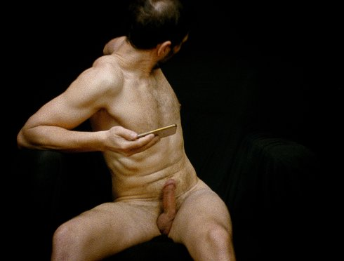

steifheit 1-3 / 7
stiffness 1–3 / 7

Albert Sackl
|
AT
2018
|
Dienstag 15 okt | 20.30 | werkstattkino | short film
night
Alle zehn Jahre setzt sich der Filmemacher nackt vor seine Kamera, die er per Zeitrafferschaltung, Bild für Bild, jeweils rund vier Stunden lang laufen lässt, um am Ende zu knapp drei Minuten Film zu kommen. Der vollständige Titel des nunmehr dreiteiligen Werks hat eine stark optimistische Schlagseite: Er macht den Vorsatz Sackls deutlich, sein Experiment über sechs Jahrzehnte auf sieben Teile zu dehnen; beim letzten Teil des Projekts wird er 80 Jahre alt sein. Die Selbstvermessung nimmt ihren Lauf. (Stefan Grissemann)
Albert Sackl geb. 1977 in Graz. Studium der Philosophie und Kunstgeschichte in Wien, Filmstudium an der Städelschule Frankfurt/Main, Kunststudium an der Akademie der bildenden Künste in Wien. Seit 2007 Lehrtätigkeit an der Schule für unabhängigen Film in Wien. |
Filme Rauchen und Saufen 1997 | Steifheit 1997 | Vom Innen; von außen 2006 (3. UX) | Steifheit I+II 2007 | Im Freien 2011 | steifheit 1-3 / 7 |